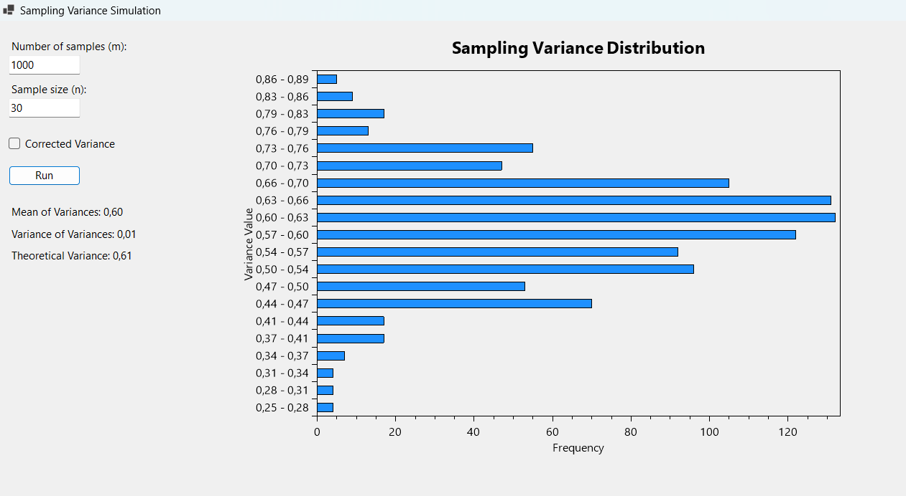

Statistics - Homework 9
Theory
Go to PracticeProperties of the Sampling Mean and Variance
The sampling mean \( \bar{X} \) and sampling variance \( S^2 \) are key statistics derived from a sample of size \( n \). Their main properties are:
-
Sampling Mean:
- \( \mathbb{E}[\bar{X}] = \mu \), where \( \mu \) is the population mean. This indicates that the sampling mean is an unbiased estimator of the population mean.
- \( \text{Var}[\bar{X}] = \frac{\sigma^2}{n} \), where \( \sigma^2 \) is the population variance. The variance of the sampling mean decreases as the sample size increases.
-
Sampling Variance:
- \( \mathbb{E}[S^2] = \sigma^2 \) (for the unbiased sample variance). This makes the sample variance an unbiased estimator of the population variance.
- The distribution of \( S^2 \) depends on the sample size \( n \) and the underlying population distribution.
Law of Large Numbers and Possible Applications
The Law of Large Numbers (LLN) states that as the sample size \( n \) increases, the sample mean \( \bar{X} \) converges to the population mean \( \mu \):
This principle ensures that large samples provide reliable estimates of population parameters, which has applications across various fields.
Applications in Cybersecurity
- Entropy Estimation: In cryptographic systems, accurate estimation of entropy in random number generators ensures robust security. The LLN helps assess the expected entropy over multiple samples.
- Anomaly Detection: Monitoring mean and variance of network traffic over time can reveal deviations indicative of attacks or intrusions.
- Key Distribution Analysis: Evaluating uniformity in key distribution in cryptographic protocols ensures secure and unbiased key generation.
- Side-Channel Attacks: LLN assists in analyzing large datasets of power or timing measurements to detect patterns and mitigate risks in cryptographic implementations.
Encryption Methods and Statistical Properties (optional)
Encryption methods are fundamental to securing data in communications and storage. They transform plaintext into ciphertext, making the data unreadable without the correct decryption key. Below are the main encryption methods and their statistical properties:
1. Substitution Ciphers
A substitution cipher replaces each letter or symbol in the plaintext with another. The most famous example is the Caesar cipher. Its statistical property is that frequency analysis can reveal patterns in the ciphertext, as the relative frequency of letters remains similar to that of the plaintext.
2. Transposition Ciphers
A transposition cipher rearranges the letters in the plaintext according to a specific system. Unlike substitution ciphers, frequency distributions of letters remain unchanged, but their positions are shuffled. Analyzing the structure and patterns of ciphertext can still provide insights into the key.
3. Symmetric Key Encryption (e.g., AES)
Symmetric encryption uses the same key for both encryption and decryption. The Advanced Encryption Standard (AES) is a widely used symmetric encryption method. Its statistical properties are designed to minimize patterns in the ciphertext, ensuring that it appears as random noise. Good encryption schemes, such as AES, make frequency analysis infeasible and ensure a low correlation between plaintext and ciphertext.
4. Asymmetric Key Encryption (e.g., RSA)
Asymmetric encryption uses a pair of keys: a public key for encryption and a private key for decryption. RSA is the most well-known asymmetric encryption algorithm. The statistical property of RSA is that the ciphertext has no obvious relationship to the plaintext and is computationally difficult to decrypt without the private key. Its security relies on the difficulty of factoring large prime numbers.
5. Stream Ciphers (e.g., RC4)
Stream ciphers encrypt plaintext one bit or byte at a time, typically by combining it with a pseudorandom stream of bits (keystream). Statistical properties include resistance to frequency analysis, but weak implementations or poor keystream generation can introduce vulnerabilities. When the keystream repeats or is predictable, ciphertext may become vulnerable to attacks.
Statistical Properties of Strong Encryption
The effectiveness of an encryption method is often determined by its ability to obscure statistical properties of the plaintext. Strong encryption schemes aim to:
- Ensure ciphertext appears random and unrelated to the plaintext distribution.
- Minimize any patterns or correlations that could be exploited by attackers (e.g., frequency analysis, known-plaintext attacks).
- Provide resistance against cryptanalysis techniques, ensuring that breaking the encryption requires significant computational effort.
Practice
Go to TheoryPart 1
Following the same scheme of HMWK 7 compute the distribution of the sampling variance ("corrected" or not). Determine the distribution of the variances of the samples, and its mean and variance. Discussing the observed relationship with the mean and variance of the parent (theoretical) distribution.
Application's Key Features
- Parent Distribution: Defines a discrete probability distribution with specific probabilities (e.g., 0.2, 0.3, 0.5) for values (0, 1, 2) used to generate random samples.
- Sampling Process: Generates m random samples, each of size n, and computes the variance for each sample. Users can choose corrected (Bessel's correction) or uncorrected variance.
- Variance Calculation: Computes the sample variance (corrected or uncorrected), the mean of sample variances, and the variance of those variances. It also calculates the theoretical variance of the parent distribution.
- Plotting: Visualizes the distribution of sample variances using a bar chart. The horizontal axis represents bins of variance values, while the vertical axis represents the frequency of occurrences in each bin.
- User Interface: Includes TextBoxes for user input (number of samples, sample size, corrected variance option), Labels for displaying computed statistics, and a PlotView for displaying the variance distribution chart.
Final Result
Here is a screenshot that shows the ouput of the application with m = 1000 and n = 30.
{kind=link}
Theoretical Reflections
Sample Mean vs. Theoretical Mean:
- The sample mean is an unbiased estimator of the theoretical mean of the parent distribution.
- As the sample size increases, the sample mean converges to the theoretical mean due to the Law of Large Numbers.
- For small sample sizes, random fluctuations can cause the sample mean to deviate from the theoretical mean.
Sample Variance vs. Theoretical Variance:
- The sample variance (when corrected by dividing by n-1) is an unbiased estimator of the theoretical variance of the parent distribution.
- This correction compensates for the bias introduced by using the sample mean instead of the true mean in the variance calculation.
- The uncorrected sample variance (dividing by n) underestimates the true variance, particularly for small sample sizes.
Effect of Sample Size:
- Larger sample sizes reduce the variability of both the sample mean and sample variance, leading to more precise estimates of the theoretical values.
- For small sample sizes, both the sample mean and variance are more prone to random fluctuations, resulting in greater discrepancies from the theoretical values.
Part 2 (optional)
Application's Key Features
-
Substitution Cipher:
- Implements a random one-to-one mapping of the alphabet (A-Z) to perform encryption.
- Each letter in the plaintext is replaced with its corresponding substitute based on the generated key.
- Demonstrates how substitution ciphers affect letter frequency, introducing randomness into the message.
-
Frequency Analysis:
- Displays the frequency distribution of letters in the original (plaintext) and encrypted messages.
- Illustrates how substitution ciphers disrupt the frequency patterns of the original text.
-
Entropy Calculation:
- Computes the Shannon entropy of the plaintext and encrypted text.
- Displays these values in separate text boxes, helping analyze how encryption increases message uncertainty.
-
Permutation Step:
- Reverses the order of the encrypted text, adding an additional layer of encryption.
- Highlights how reordering impacts frequency patterns and entropy without changing individual letter substitutions.
-
Decryption:
- Enables reversing the substitution and permutation steps to retrieve the original plaintext.
- Demonstrates the importance of knowing the encryption key for successful decryption.
Final Result
Here is a screenshot that shows the ouput of the application.

Theoretical Reflections
1. How the Substitution Cipher Affects the Distribution of Letters
The substitution cipher changes the mapping of each letter in the plaintext to a corresponding letter in the ciphertext according to a predefined substitution key. This transformation alters the frequency distribution of the original letters while preserving the relative frequencies. For instance, if 'E' was the most frequent letter in the plaintext, its substitute (e.g., 'I' in this case) will appear most frequently in the ciphertext. This means the overall statistical patterns are retained, though obscured. However, such a cipher is vulnerable to frequency analysis, as the distribution of letter frequencies remains similar between the plaintext and ciphertext.
2. How Substitution Affects Uncertainty or Randomness in the Message
The substitution cipher does not significantly affect the entropy (measure of uncertainty or randomness) of the message, as seen in the output where both the original and encrypted messages have an entropy of 3.4464. This is because substitution does not introduce new randomness; it simply remaps the letters while maintaining their frequency. Hence, the predictability of the message, based on letter distribution, remains relatively unchanged.
3. Effect of Reversing the Order of Letters
Reversing the order of letters does not change the frequency distribution or entropy of the message, as it only rearranges the sequence of characters. The frequency of individual letters (e.g., 'E' appearing 3 times in the original and encrypted texts) remains constant. However, reversing the message can obscure patterns like repeated bigrams or trigrams (e.g., common digraphs like 'TH' or 'ER'), making it marginally harder for attackers relying on such patterns. Yet, this technique alone does not add significant security since the underlying frequency distribution is unaltered.
4. Frequency Distribution Changes After Permutation
The permutation step (substitution in this case) remaps letters but keeps the overall frequency structure intact. This means statistical analysis can still be applied to deduce the substitution key by comparing the ciphertext's letter frequencies to standard frequency tables (e.g., the frequency of 'E' in English text). The significance of this change is that while it obscures the direct readability of the text, it does not eliminate statistical patterns that can aid cryptanalysis. This highlights the weakness of substitution ciphers when used without additional layers of encryption.
5. Entropy Considerations
The original and encrypted messages have the same entropy of 3.4464, indicating no increase in randomness or unpredictability. This shows that the substitution cipher does not enhance the intrinsic security of the message against entropy-based attacks. A higher entropy would imply greater unpredictability and, therefore, increased security. For robust cryptographic systems, increasing entropy is essential to thwart statistical or brute-force attacks.
6. Contrast with RSA Concepts
Unlike substitution ciphers, RSA encryption relies on mathematical principles (e.g., modular arithmetic and prime factorization) and does not inherently preserve frequency distribution. RSA encrypts data at the level of blocks or numerical representations, which breaks statistical patterns. Additionally, RSA’s security lies in its key management and computational infeasibility of key recovery, not on altering letter frequencies. While substitution ciphers can be cracked with frequency analysis, RSA’s use of public-private key pairs ensures a high level of difficulty in decryption without the private key.
7. Final Thoughts on Entropy and Security
Entropy is a critical metric in cryptography as it quantifies the unpredictability of a message. Higher entropy in an encrypted message makes it harder for attackers to predict patterns or reconstruct plaintext. Substitution ciphers fail to increase entropy and thus provide minimal security. In contrast, modern encryption algorithms like AES or RSA aim to maximize entropy to obscure patterns and enhance resistance to cryptanalysis. A secure encryption scheme should strive to distribute entropy uniformly across the message, ensuring no discernible statistical patterns remain.